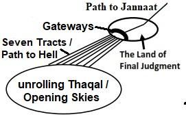

The Surah logically shows the reality of next life and calls to take the Path of God.
সূরাটি যৌক্তিকভাবে পরবর্তী জীবনের বাস্তবতা দেখায় এবং ঈশ্বরের পথ গ্রহণের আহ্বান জানায়।
Tafsir of the Surah Section 1 of Chapter 78 [Verse 1-5]: Point of Dispute
সূরা 78 অধ্যায়ের 1 ধারার তাফসির [আয়াত 1-5]: বিরোধের পয়েন্ট
Concerning what are they disputing? Concerning the Great News, about which they cannot agree. Verily, they shall soon know! Verily, verily, they shall soon know! Section 2 of Chapter 78 [Verse 6-16]: Humans on the Earth
তারা কি নিয়ে বিতর্ক করছে? গ্রেট নিউজ সম্পর্কে, যে সম্পর্কে তারা একমত হতে পারে না। নিশ্চয় তারা শীঘ্রই জানতে পারবে! নিশ্চয়ই তারা শীঘ্রই জানতে পারবে! অধ্যায় 78 এর অধ্যায় 2 [শ্লোক 6-16]: পৃথিবীতে মানুষ
Have We not made the land as a wide expanse and the mountains as pegs? And created you from pairs (double helix DNA molecules), and we made your sleep rest. And made the night as a covering and made the day as a means of subsistence? And built over you the Seven Skies, and placed a Light of Splendor? And do We not send down from the clouds water in abundance that We may produce therewith corn and vegetables and gardens of luxurious growth?
আমি কি ভূমিকে বিস্তৃত বিস্তৃতি এবং পর্বতমালাকে খুঁটির মতো করিনি? এবং আপনাকে জোড়া (ডাবল হেলিক্স ডিএনএ অণু) থেকে তৈরি করেছি এবং আমরা আপনার ঘুমকে বিশ্রাম দিয়েছি। আর রাতকে বানিয়েছেন আবরণ আর দিনকে করেছেন জীবিকার উপায়? এবং আপনার উপর সাত আকাশ নির্মাণ, এবং একটি জাঁকজমক আলো স্থাপন? আর আমরা কি মেঘ থেকে প্রচুর পরিমাণে পানি বর্ষণ করি না, যাতে আমরা তা দ্বারা শস্য, শাক-সবজি এবং বিলাসবহুল বাগান উৎপন্ন করি?
Verily, the Day of Sorting out is a thing appointed. The Day that the Trumpet shall be sounded (second blow) and ye shall come forth in crowds.
নিঃসন্দেহে সাজানোর দিন একটি নির্ধারিত বিষয়। যেদিন শিঙা বাজানো হবে (দ্বিতীয় ফুঁ) এবং তোমরা দল বেঁধে বেরিয়ে আসবে।
Humans will be resurrected in the Thaqal (reviving initial universe at the state of heavy mass). The resurrected humans and the matter of the solar system will be ejected and moved to a safe distance in the Super Space, away from the Thaqal. The Land of Judgment will be prepared with the ejected matter. The trumpet shall be sounded (second blow), and humans shall assemble for judgment. And the Skies opened, and for them will be gateways.
মানুষের পুনরুত্থিত হবে থাকাল (ভারী ভরের অবস্থায় প্রাথমিক মহাবিশ্বকে পুনরুজ্জীবিত করা)। পুনরুত্থিত মানুষ এবং সৌরজগতের বিষয়টি বের করে দেওয়া হবে এবং থাকাল থেকে দূরে সুপার স্পেসে নিরাপদ দূরত্বে নিয়ে যাওয়া হবে। উচ্ছেদকৃত বিষয় নিয়ে রায়ের জমি প্রস্তুত করা হবে। শিঙা বাজানো হবে (দ্বিতীয় আঘাত), এবং মানুষ বিচারের জন্য জড়ো হবে। এবং আকাশ খোলা, এবং তাদের জন্য প্রবেশদ্বার হবে.
The Thaqal (reviving initial universe at the state of Heavy Mass) will be unrolling, and the Skies will be opening. Seven Tracts (seven channels through the super space) will link the opening skies (unrolling Thaqal) with the Land of Judgment. The tracks will have gateways on the Land of Judgment.
থাকাল (ভারী ভরের অবস্থায় প্রাথমিক মহাবিশ্বকে পুনরুজ্জীবিত করা) নামানো হবে, এবং আকাশ খুলবে। সেভেন ট্র্যাক্ট (সুপার স্পেসের মধ্য দিয়ে সাতটি চ্যানেল) খোলা আকাশকে (থাকাল নামানো) বিচারের ভূমির সাথে যুক্ত করবে। ট্র্যাক বিচারের দেশে গেটওয়ে থাকবে.
FIGURE 78.1: Gateways, Tracks and Thaqal

চিত্র 78_1 / Figure 78_1
চিত্র 78.1: গেটওয়ে, ট্র্যাক এবং থাকাল
চিত্র 78_1 / Figure 78_1
The sinners will be compelled to move through these gateways and tracks. The tracts will lead the sinners into opening skies, sustaining the objects of hell (galaxies). And the mountains shall vanish, as if they were a mirage.
পাপীরা এই গেটওয়ে এবং ট্র্যাক দিয়ে চলাচল করতে বাধ্য হবে। ট্র্যাক্টগুলি পাপীদেরকে খোলা আকাশে নিয়ে যাবে, নরকের বস্তুগুলিকে (গ্যালাক্সি) টিকিয়ে রাখবে। আর পর্বতগুলো বিলীন হয়ে যাবে, যেন তারা মরীচিকা।
After the Judgment, the Land of Final Judgment will disintegrate, and the broken pieces will fly back into the opening skies. The pieces (mountains of matter) will vanish into the opening skies, as if they were a mirage.
বিচারের পরে, চূড়ান্ত বিচারের ভূমি বিচ্ছিন্ন হয়ে যাবে, এবং ভাঙা টুকরোগুলি আবার খোলা আকাশে উড়ে যাবে। টুকরোগুলো (পদার্থের পর্বত) খোলা আকাশে বিলীন হয়ে যাবে, যেন তারা মরীচিকা।
Truly, Hell is as a place of ambush—for the transgressors a place of destination.
প্রকৃতপক্ষে, জাহান্নাম একটি অতর্কিত স্থান - সীমালঙ্ঘনকারীদের জন্য একটি গন্তব্য স্থান।
A human will move through one of the Seven Tracts like a flying superman. Ultimately, he will reach his galaxy by moving through a sub-tract. As the Skies will be opening, the galaxies will be reviving. A galaxy will catch the human, determined for her: ―Truly, hell is as a place of ambush.‖ Each sinner will reach the galaxy determined for him. He will be dragged by the guiding angel on his face. Truly, hell is as a place of ambush—for the transgressors a place of destination.
একজন মানুষ উড়ন্ত সুপারম্যানের মতো সাতটি ট্র্যাক্টের একটির মধ্য দিয়ে যাবে। শেষ পর্যন্ত, একটি উপ-ট্র্যাক্টের মধ্য দিয়ে সে তার গ্যালাক্সিতে পৌঁছাবে। আকাশ যখন খুলবে, ছায়াপথগুলি পুনরুজ্জীবিত হবে। একটি ছায়াপথ মানবকে ধরবে, তার জন্য নির্ধারিত: "সত্যিই, নরক হল অ্যাম্বুশের জায়গা।" প্রতিটি পাপী তার জন্য নির্ধারিত ছায়াপথে পৌঁছাবে। পথপ্রদর্শক দেবদূত তাকে তার মুখের উপর টেনে নিয়ে যাবে। প্রকৃতপক্ষে, জাহান্নাম একটি অতর্কিত স্থান - সীমালঙ্ঘনকারীদের জন্য একটি গন্তব্য স্থান।
They will dwell therein for ages. Nothing cool shall they taste therein, nor any drink save a boiling fluid and a fluid dark, murky, intensely cold, a fitting recompense for that they used not to fear any account, but they treated Our signs as false. And all things have We preserved on record. So, taste ye; for no increase shall We grant you except in punishment.
তারা সেখানে যুগ যুগ ধরে বসবাস করবে। তারা সেখানে কোন শীতল আস্বাদন করবে না এবং কোন পানীয়ও পাবে না ব্যতীত কোন ফুটন্ত তরল এবং অন্ধকার, ঘোলাটে, প্রচন্ড ঠাণ্ডা, এর জন্য উপযুক্ত প্রতিদান যে তারা কোন হিসাবকে ভয় করত না, কিন্তু তারা আমার নিদর্শনাবলীকে মিথ্যা মনে করত। আর সব কিছু আমরা রেকর্ডে সংরক্ষণ করে রেখেছি। অতএব, তোমরা আস্বাদন কর; আমরা তোমাদের শাস্তি ব্যতীত কোন বৃদ্ধি দেব না।
Verily, for the Guards, there will be in fulfillment of desires, gardens enclosed and grapevines, companions of equal age, and a cup full; no vanity shall they hear therein, nor untruth—recompense from thy Lord, a gift sufficient.
নিঃসন্দেহে, রক্ষীদের জন্য থাকবে আকাঙ্ক্ষা পূরণের জন্য, ঘেরা বাগান ও আঙ্গুরের লতা, সমবয়সী সঙ্গী এবং একটি পেয়ালা পূর্ণ; তারা সেখানে কোন অসারতা শুনবে না এবং মিথ্যাও শুনবে না- আপনার পালনকর্তার কাছ থেকে প্রতিদান, যথেষ্ট উপহার।